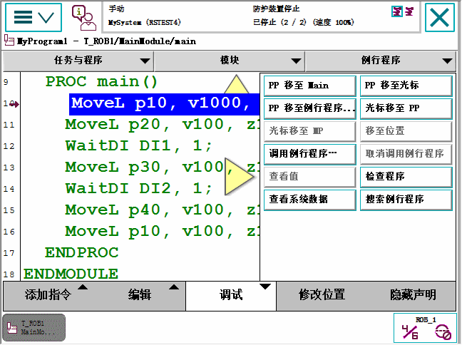
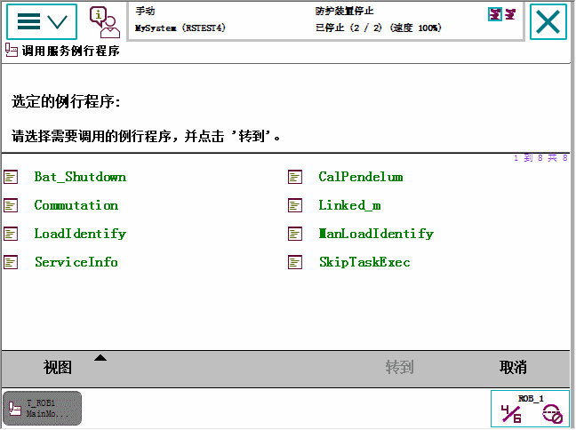

服务例行程序执行一系列常用服务。 哪些服务例行程序可供使用取决于您系统设置及可用选项。 更多详情，请参阅工厂或车间的说明文档。
服务例行程序只能在在手动减速或手动全速模式下启动。
程序必须停止且必须有程序指针。
在同步模式下无法调用例行程序。
如果服务例行程序包含必须在自动模式中执行的部分，在启动服务例行程序之前必须不能手动移动程序指针。 程序指针应在程序流程停止的位置。
 | 警告 如果服务例行程序在移动指令中断后（也就是在到达最终位置前）启动，则在开始执行服务例行程序的时候将会恢复移动。 |
 | 小心 注意，服务例行程序已开始运行后，中止例行程序不会将系统恢复至先前状态，因为例行程序已移动机器人手臂。 |
本节介绍了如何使用 Call Routine（调用例行程序）执行任务范围内的服务例行程序或另一例行程序。
操作 | |
1 | 在 ABB 菜单中，点击Program Editor（程序编辑器）。 |
2 | 在 Debug（调试）菜单中，点击 Call Routine（调用例行程序）。  |
3 | Call Service Routine（调用服务例行程序）对话框列出了所有预定义服务例行程序。 而该对话框也可用于执行任务范围内的任何例行程序。选择 View（查看）菜单中的 All Routines（全部例行程序）可查看所有可用的例行程序。  |
4 | 点击服务例行程序，然后点击转到。 将显示 Program Editor（程序编辑器），程序指针移至选定例行程序的开头。 |
5 | 按下 FlexPendant 的 Start（启动）按钮并依照 FlexPendant 上显示的说明进行操作。 执行该例行程序之后，任务停止，程序指针返回到服务例行程序开始执行之前的位置。 |
| 小心 如果要在结束执行例行程序前中断例行程序，请按 Cancel Call Rout（取消调用例行程序）。在恢复标准程序流之前，必须查看机器人是否处于正确的位置。如果机器人因中断的例行程序已移动位置，您必须采取行动将机器人返回至正确的位置。详情请参阅将机器人返回路径 。 |
| 警告 请勿在移动或焊接的中途执行服务例行程序。 如果在移动的中途执行服务例行程序，则未完成的移动将在执行调用的例行程序前结束。这可能导致意外的移动。 如有可能，在调用服务例行程序前，逐步执行并完成中断的移动。否则，通过在服务例行程序中添加 StorePath 和 RestoPath 保存当前的移动。这样，在服务例行程序完成后，程序再次启动时完成将会移动。 但是，如果通过 StorePath 和 RestoPath 的错误句柄调用服务例行程序，则无法按预期每次保存多个中断的移动。 |
除服务例行程序外，Call Routine（调用例行程序）适用于符合以下标准的所有例行程序：
必须是参数列表为空的程序。 这表示功能例行程序和陷阱例行模式均不符合要求。
必须是任务范围内的程序，而不是本地程序。 如果程序只是某一模块内的本地程序，而该模块受到范围限制，则任务层将不显示该程序。
必须是加载模块中的程序，而不是安装程序。 （请参照 Controller 主题中 Automatic Loading of Modules 类型中的 Installed 系统参数。）
Service Information System，ServiceInfo服务例行程序。
Calibration Pendulum，CalPendulum服务例行程序。
有关 StorePath 和 RestoPath 的更多详细信息，请参见技术参考手册 - RAPID 指令、功能和数据类型。